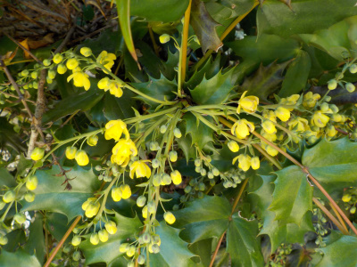
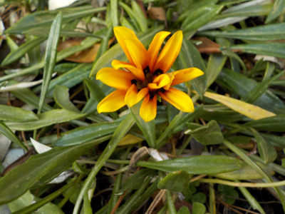
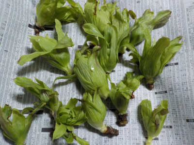
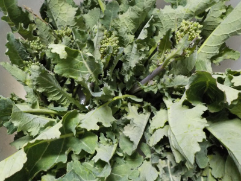
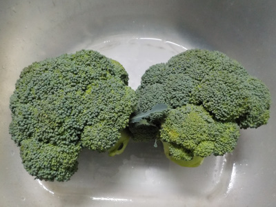
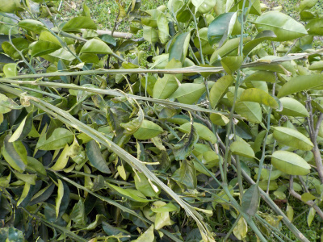

ヒイラギナンテンが咲きました。
2021/02/21

ちょっと変わった花の付き方が個性があっていいですね。
こんな感じの個性的なのが色々庭に植わっていたらどうでしょうね？
多様性でいいかな。ごちょごちゃして嫌かな。
2021/02/21

ちょっと変わった花の付き方が個性があっていいですね。
こんな感じの個性的なのが色々庭に植わっていたらどうでしょうね？
多様性でいいかな。ごちょごちゃして嫌かな。
2021/02/21

名前はよくわかりませんが、黄色い花が咲いていました。ガザニアかな？
植物の名前って覚えれないです。
園芸店やホームセンターに行って名前を見ればいいですが、なかなか行かないです。
コロナ自粛で出かけないクセができてしまった。
2021/02/13

先週は見なかったので、今週いっせいに出たようです。
小さめなので食べやすそう。
暖かくなって虫が活動しているようで。虫食いの被害にあっているものがありました。
2021/02/13

アスッコを手でポキポキ折って収獲したんですが、今年のアスッコはいつもより硬い。
なんか不味そうな予感。
2021/02/13

ブロッコリーは買って食べないし、コロナの影響であまり外食をしないので、久々に食べるかも。
食べるのが楽しみです。
2021/02/06

天気が良く暖かかったので、柑橘系の剪定をしました。
去年も沢山切ったんですが、1年でだいぶ大きくなったようで今年も沢山切りました。
葉っぱと枝でごちゃごちゃしていたのが取り除かれるとスッキリして気持ちがいいですね。
過去の日記
畑仕事じゃないよ。